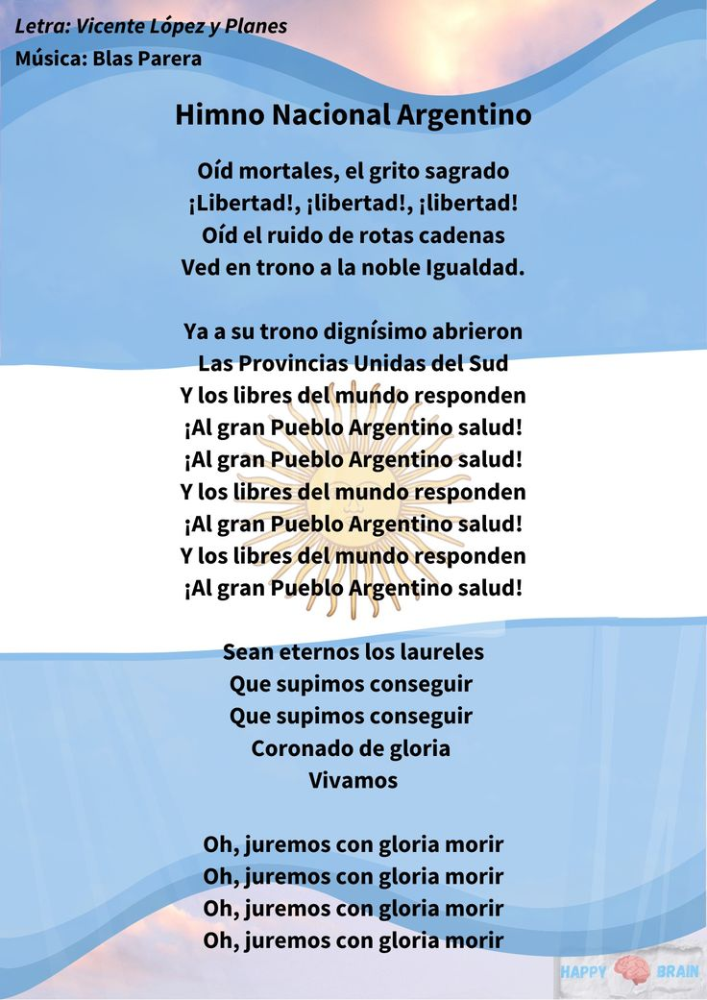
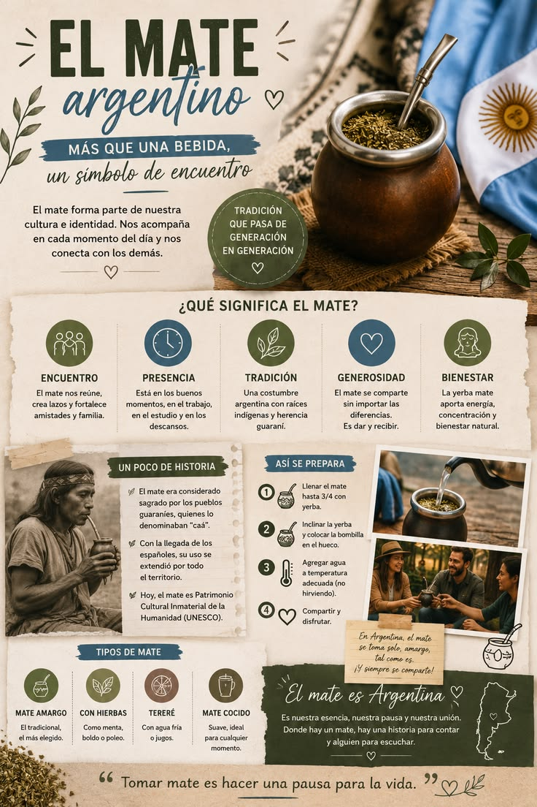
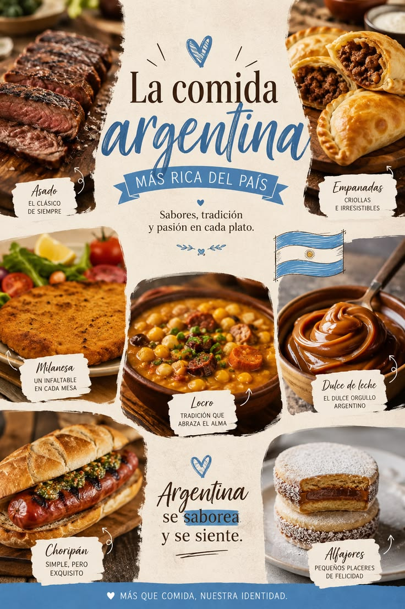

O Hino Nacional Argentino é um símbolo de orgulho...

🎭 Cultura
A cultura argentina mistura tradições indígenas...

🍴 Comida Típica
Asado: churrasco argentino...
Empanadas: pastéis recheados...
Dulce de leche: doce cremoso...

🔎 Curiosidades
O Obelisco de Buenos Aires...
A Patagônia é famosa...
O tango nasceu em Buenos Aires...
🎶 Música e Dança
O tango é a dança mais famosa, com músicas intensas e apaixonadas. O folclore argentino traz ritmos como chacarera e zamba. Mercedes Sosa marcou a música popular.